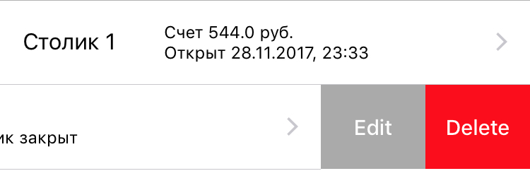
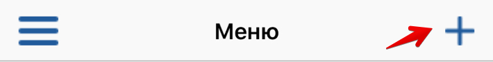
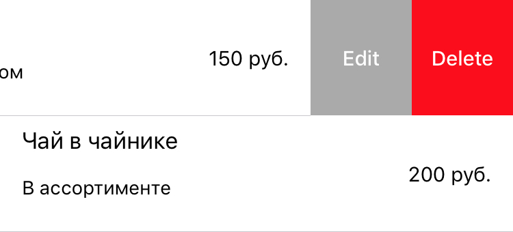
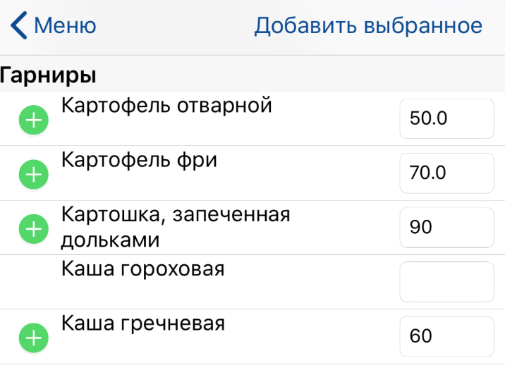
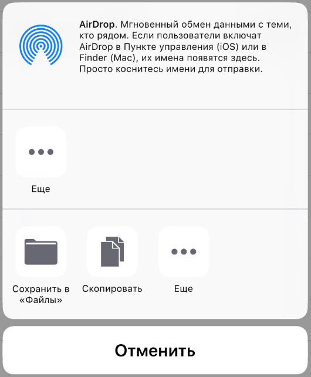
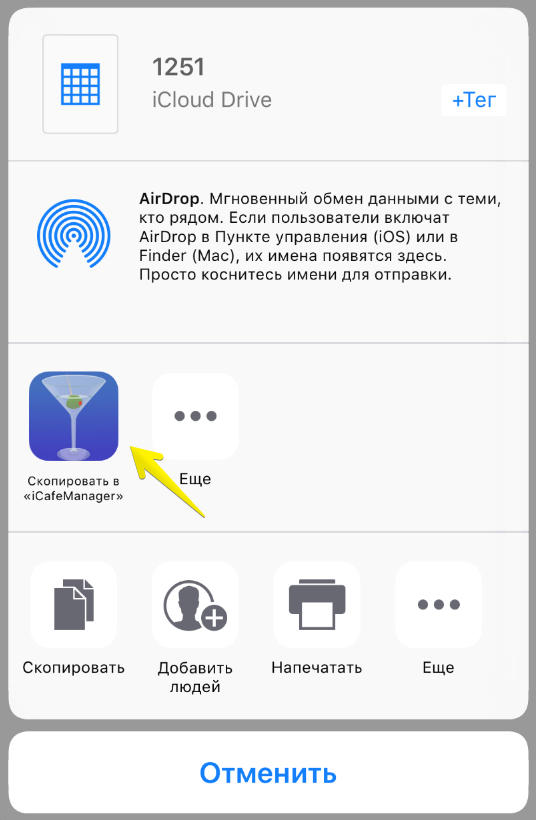

Откройте экран Столики.
Чтобы добавить новый столик, нажмите кнопку добавления:
Введите параметра столика и нажмите кнопку "Готово" - столик добавлен.
ВНИМАНИЕ! Название столика должно быть уникальным и не пустым. Нельзя создать столик с пустым названием или без указания вместимости.
Для редактирования столика выполните свайп влево, появятся кнопки изменения и удаления:

Изменение столика осуществляется так же, как добавление.
ВНИМАНИЕ! При удалении столика, вся историческая информация будет удалена!
Откройте экран Меню. Чтобы добавить новую позицию, нажмите кнопку добавления и выберите "Добавить вручную".

Введите наименование, описание, стоимость позиции и категорию. При заполнении поля Категория, если она была создана ранее, будет возможно выбрать ее из выпадающего списка.
ВНИМАНИЕ! Наименование и стоимость - поля, обязательные для заполнения. Наименование должно быть уникальным.
Для редактирования или удаления позиции, выполните свайп влево:

ВНИМАНИЕ! При удалении позиции, будут удалены все заказы этой позиции, в том числе архивные!
В приложении присутствует готовый каталог различных блюд на русском и английском языках. Для добавления новых пунктов меню, откройте экран Меню, нажмите на + для открытия опций добавления и выберите "Добавить из каталога...".
Нажмите кнопку "Выбрать" в панели навигации, выберите необходимые пункты меню, укажите цены и нажмите кнопку "Добавить".

Если у Вас возникла необходимость экспортировать меню в том числе и для последующего импорта на другом устройстве, откройте экран Меню, нажмите на + для открытия опций добавления и выберите "Экспортировать меню". Приложение предложит Вам опции передачи файлика, например по почте или путем сохранения их на iCloudDrive. Файл в формате CSV.

ВНИМАНИЕ! Если Вы откроете файл в приложении MS Excel, у Вас могут возникнуть проблемы с кодировкой. Если это случилось, следуйте инструкции:
Для Microsoft Windows:
1) Откройте файл экспорта в Блокноте.
2) Нажмите на Файл-> Сохранить как.
3) При сохранении выберите кодировку ANSI.
4) После этого снова откройте файл в Excel, проблема должна быть решена.
Для Mac OS (вариант 1, работает не во всех версиях Excel):
1) Создайте новый документ в своём Microsoft Excel for Mac
2) Файл -> Импорт -> CSV файл
3) Формат файла: UTF-8 Unicode -> Далее
4) Поставить галку рядом с разделителем “запятая”, снять с других -> Готово
Для Mac OS (вариант 2, пример для Sublime Text):
1) Скачайте и установите сторонний текстовый редактор, например Sublime Text.
2) Откройте экспортированный файл с помощью Sublime Text.
3) Выберите в меню File -> Save with encoding -> Cyrillic (Windows 1251)
4) Откройте файл с помощью Excel для редактирования, данные должны быть отображены корректно.
Если это не помогло, свяжитесь с нами.
Для импорта меню, откройте CSV файл с iCloudDrive или из вложения к письму и в окне выбора приложения выберите "Скопировать в iCafeManager". Откроется наше приложение и меню будет импортировано.

ВНИМАНИЕ пользователям Windows! Если Вы хотите заполнить меню вручную в программе Excel или другом текстовом редакторе, убедитесь, что после сохранения файл имеет кодировку UTF-8 или ASCII (ANSI или Windows CP1251) и разделитель - ";". Сделать это можно открыв файл в Блокноте и сохранив его в нужной кодировке, как описано выше. Если у Вас возникла такая необходимость, мы рекомендуем сначала выполнить экспорт данных в CSV файл, перенести его на ПК, а затем в программе MS Excel редактировать. Перед импортом большого файла рекомендуется импортировать свой файл, но с 1-2 строчками пунктов меню, чтобы убедиться, что импорт прошел успешно.
ВНИМАНИЕ пользователям MacOS! Если Вы отредактируете файл в приложении Microsoft Excel for Mac, для корректного импорта данных необходимо сохранить файл в кодировке Windows. Для этого выполните:
1) Файл -> Сохранить как...
2) Введите название файла и формат "Текст Windows с разделителями-запятыми (.csv), при появлении окна с предупреждением нажмите "Продолжить"
3) Сохраненный файл импортируйте в приложение.